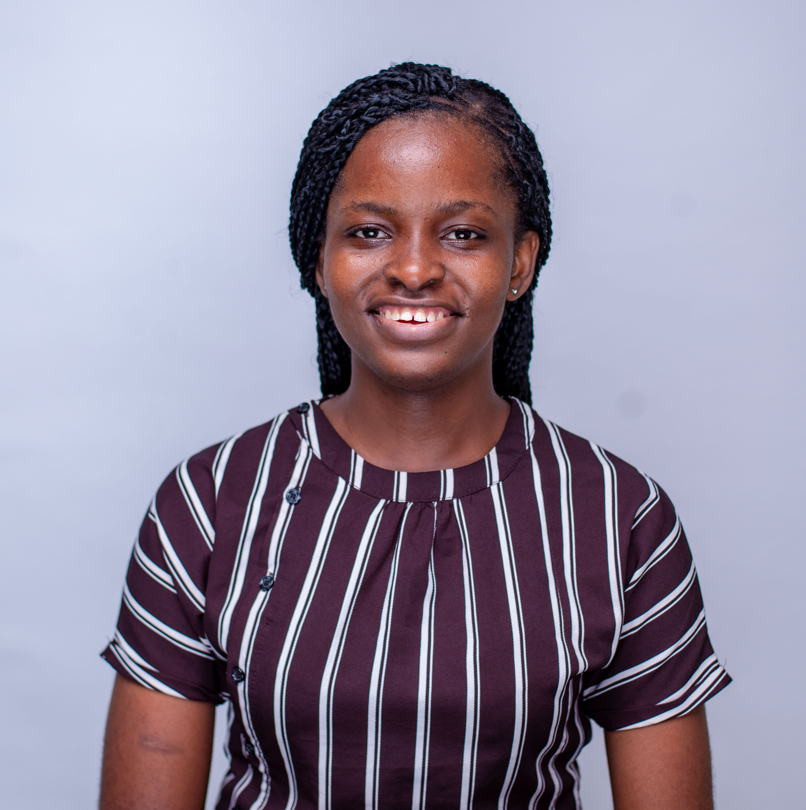

Education Researcher · M&E Specialist · Africa Development
I design, evaluate, and strengthen education and development programmes through research, data analysis, and strategic learning. My work focuses on education equity, programme effectiveness, community-centred change, and translating evidence into practical insights for nonprofits, universities, and global development organisations.

About
I am an education development professional, researcher, and data analyst with experience across Nigeria, India, Malawi, and the United States. My work spans programme evaluation, research design, data systems, education equity, monitoring and evaluation, and capacity building.
I hold an M.S.Ed. in International Education Development from the University of Pennsylvania, a Post-Graduate Diploma in Liberal Studies from Ashoka University, and a B.A.Ed. in English Education from the University of Lagos. My academic and professional work has been shaped by a commitment to using evidence to improve education systems, strengthen programme design, and support more equitable learning outcomes.
I have worked with organisations including the University of Pennsylvania, Development Media International, Teach For Nigeria, Slum2School Africa, Ashoka University, and Global Schools. Across these roles, I have designed and analysed surveys, managed large-scale data workflows, conducted quantitative and qualitative research, developed monitoring systems, and translated findings into decision-ready reports for programme leaders, funders, educators, and institutional stakeholders.
I am also the founder of Leaders Tribe, an initiative focused on equipping women with data analysis and leadership development skills to help them thrive in a digital world. Through this work, I design beginner-friendly training programmes that build practical data capacity for graduates, professionals, and emerging leaders.
My interests sit at the intersection of education equity, data-informed decision-making, decolonial education, programme effectiveness, and community-led development. I am especially committed to producing research and insights that are rigorous, accessible, and grounded in the lived realities of the communities they are meant to serve.
Expertise
A cross-disciplinary toolkit spanning quantitative analysis, evaluation design, and education policy.
Work
A selection of research, evaluation, and data analysis projects across education development contexts.
Quantitative Analysis · Rwanda
Stata-based analytical assessment for Laterite Research using mobile money survey data from Rwanda. Tasks included data reshaping, financial inclusion dummy construction, market structure analysis, failed transaction rate testing, and logistic regression modelling of account cancellation.
Programme Evaluation · Nigeria
A comprehensive evaluation of the TFN Two-Year Fellowship Programme in Ogun State. Deliverables included a programme description, problem statement and literature review, logic model, evaluation purpose statement, data collection instrument (quantitative survey), and a full evaluation plan with administration and data use frameworks.
RCT Design · Nigeria
Proposed a two-arm individual-level randomised controlled trial to estimate the causal effect of high-dose instructional coaching on TFN fellow teaching effectiveness. Targeting MDES of 0.50 SD at 80% power, with 160 fellows (80 per arm) and primary endpoint at Month 12.
Impact Evaluation · USA
Evaluated the impact of First-Year Seminars on student belonging, academic adjustment, and dialogue skills at Penn's College of Arts and Sciences across Fall 2024 and Spring 2025. Combined baseline/endline surveys and produced a comparative synthesis report for programme leaders.
Qualitative Analysis · USA
Conducted inductive thematic analysis and keyword coding on 7,760 analysable student course evaluation comments (Fall 2013 – Spring 2024) from STEM courses at a university, identifying recurring patterns in student experience across 22 academic terms.
Quantitative Research · USA
Used national survey data (Spring 2021) to examine how geographic location and community economic conditions influence nonprofit financial health. Found that economic disadvantage — more than urban/rural geography — is the primary driver of reduced donation revenue growth.
Scholarship
Peer-reviewed work, conference papers, and invited presentations.
Conference Paper & Capstone
Comparative and International Education Society (CIES) Annual Conference, 2026 · Penn GSE Capstone Showcase, 2026. Argues that outcome-based governance carries colonial epistemological assumptions that inflict epistemic harm by marginalising African relational and communal educational values. Proposes peace-affirming assessment as a constructive alternative rooted in Ubuntu philosophy.
Book Chapter
Contributed chapter in a Teach For All network publication drawing on field experience and programme insights from the Teach For Nigeria fellowship and the broader education equity landscape in Nigeria.
Invited Presentation
Presented on impact measurement frameworks for education advocacy, including application of the KAB (Knowledge, Attitudes, Behaviours) framework to SDG-aligned programme evaluation for Global Schools advocates.
Contact
I am open to research collaborations, consulting engagements, and conversations about education policy, M&E, and development in Africa. Feel free to reach out.